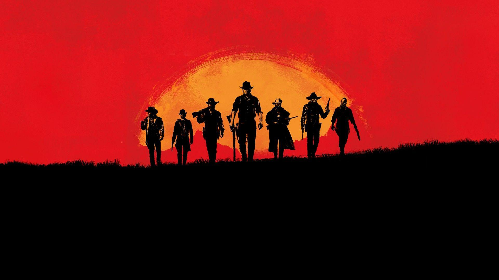
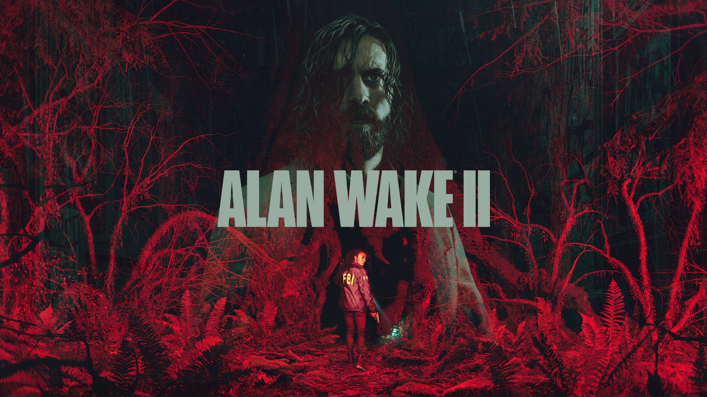
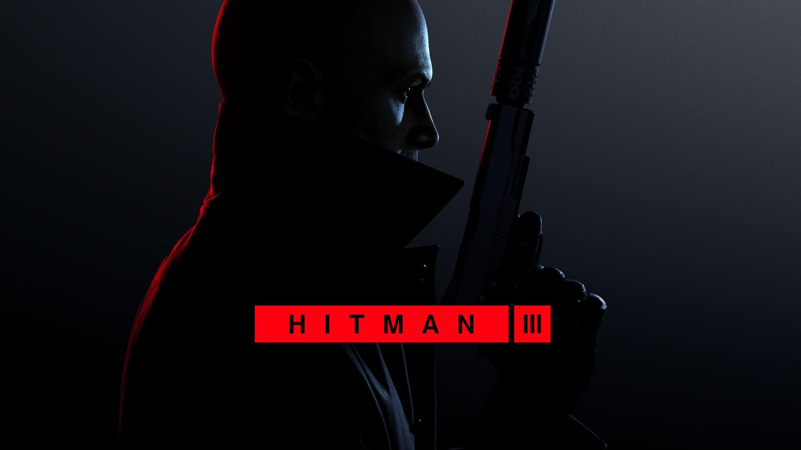

When a young street hustler, a retired bank robber and a terrifying psychopath land themselves in trouble, they must pull off a series of dangerous heists to survive in a city in which they can trust nobody, least of all each other.

ROCKSTAR
RED DEAD REDEMPTION
2
Includes Red Dead Redemption 2: Story Mode and Red Dead Online.
Winner of over 175 Game of the Year Awards and recipient of over 250 perfect scores, Red Dead Redemption 2 is an epic tale of honor and loyalty at the dawn of the modern age.
America, 1899. Arthur Morgan and the Van der Linde gang are outlaws on the run. With federal agents and the best bounty hunters in the nation massing on their heels, the gang must rob, steal and fight their way across the rugged heartland of America in order to survive. As deepening internal divisions threaten to tear the gang apart, Arthur must make a choice between his own ideals and loyalty to the gang who raised him.
Red Dead Redemption 2 also includes the shared living world of Red Dead Online – forge your own path as you battle lawmen, outlaw gangs and ferocious wild animals to build a life on the American frontier. Build a camp, ride solo or form a posse and explore everything from the snowy mountains in the North to the swamps of the South, from remote outposts to busy farms and bustling towns. Chase down bounties, hunt, fish and trade, search for exotic treasures, run your own underground Moonshine distillery, or become a Naturalist to learn the secrets of the animal kingdom and much more in a world of astounding depth and detail – includes all new features, gameplay content and additional enhancements released since launch.

REMEDY ENTERTAINMENT
ALAN WAKE
2
A string of ritualistic murders threatens Bright Falls, a small-town community surrounded by Pacific Northwest wilderness. Saga Anderson, an accomplished FBI agent with a reputation for solving impossible cases arrives to investigate the murders. Anderson’s case spirals into a nightmare when she discovers pages of a horror story that starts to come true around her.
Alan Wake, a lost writer trapped in a nightmare beyond our world, writes a dark story in an attempt to shape the reality around him and escape his prison. With a dark horror hunting him, Wake is trying to retain his sanity and beat the devil at his own game.
Anderson and Wake are two heroes on two desperate journeys in two separate realities, connected at heart in ways neither of them can understand: reflecting each other, echoing each other, and affecting the worlds around them.
Fueled by the horror story, supernatural darkness invades Bright Falls, corrupting the locals and threatening the loved ones of both Anderson and Wake. Light is their weapon—and their safe haven — against the darkness they face. Trapped in a sinister horror story where there are only victims and monsters, can they break out to be the heroes they need to be?
Solve a Deadly Mystery
What begins as a small-town murder investigation rapidly spirals into a nightmare journey. Uncover the source of the supernatural darkness in this psychological horror story filled with intense suspense and unexpected twists.
Play As Two Characters

IO INTERACTIVE
HITMAN
3
Hitman 3 is a 2021 stealth game developed and published by IO Interactive. It is the eighth main installment in the Hitman video game series, the sequel to 2018's Hitman 2, and the third and final entry in the World of Assassination trilogy